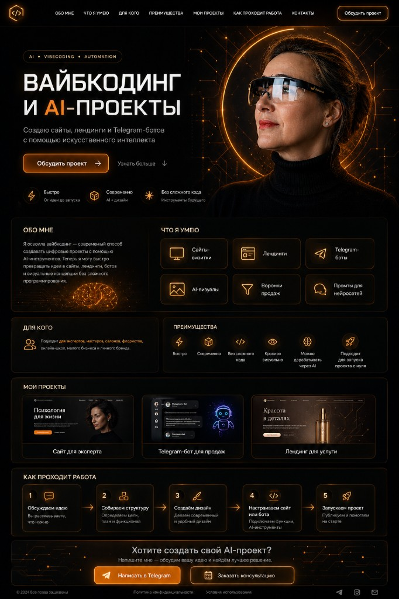

Цельное впечатление вместо «просто страницы».
vibe coder / portfolio / web & ai experiences
Я делаю сайты, интерфейсы
и digital-проекты, которые
выглядят как вайб, а работают как система
_
Не просто «что-то сверстать», а собрать ощущение, стиль, логику и подачу так, чтобы проект хотелось открыть, листать и запомнить.

Портрет
Обо мне
я не просто пишу код — я собираю впечатление
Я работаю на стыке кода, визуала, UX и AI-инструментов. Для меня сайт — это не набор блоков. Это ощущение от проекта, ритм, подача, структура и то, как человек чувствует себя внутри интерфейса.
Я делаю: лендинги, портфолио, промо-страницы, интерфейсы, спецпроекты, digital-концепты, AI-first сайты и продукты.
Мой подход — сделать быстро, красиво и не бездумно. Чтобы проект не выглядел как очередной шаблон, собранный без вкуса и идеи.
Смысл и сценарий до пикселей.
Что я умею
что я делаю
Лендинги
Сайты, которые собирают внимание и ведут человека по смыслу.
Портфолио и личные сайты
Страницы, которые показывают стиль, характер и уровень.
Визуальные концепты
Когда нужен не просто сайт, а атмосфера и характер.
AI + Web
Использую нейросети как инструмент усиления идей.
UX и структура
Продумываю путь пользователя: взгляд, ритм, решение.
Быстрый запуск
Сильная первая версия без месяцев согласований.
Мой подход
как я работаю
Сначала вайб
Смотрю не только на задачу, но и на ощущение, которое должен передавать проект.
Потом структура
Собираю смысл, сценарий и путь пользователя до визуальной части.
Потом реализация
Когда есть стиль и логика, проект собирается быстрее и точнее.
Проекты
избранные проекты
01 AI Landing Experience
Лендинг для digital-продукта с акцентом на атмосферу и скорость восприятия.
Сделано: структура, тексты, дизайн-концепция, сборка.
02 Portfolio for Creative Expert
Личный сайт-портфолио, который показывает кейсы и стиль человека.
Сделано: позиционирование, подача, визуальный ритм, упаковка.
03 Bot & Funnel Page
Промо-страница под воронку с акцентом на конверсию и лёгкость восприятия.
Сделано: логика блоков, тексты, CTA, визуальный каркас.
04 Concept Site for AI Creator
Сайт с трендовой подачей и сильным первым экраном.
Сделано: creative direction, структура, визуальная концепция.
Почему со мной
Потому что я умею видеть проект целиком: не только как собрать, но и как подать, как это будет восприниматься и что запомнят.
Эстетика + структура + digital-мышление + скорость.
Стек
ChatGPT, Cursor, HTML/CSS/JS, React, Tailwind, Framer Motion, Figma, Tilda/Webflow/custom, Telegram/Bots/AI tools.
Главный инструмент — вкус, насмотренность и умение собирать цельное впечатление.
Для кого
Экспертам, креаторам, digital-проектам, AI-продуктам, студиям и тем, кому нужен сайт с характером, а не шаблонная безликая страница.
Если тебе нужен сайт, который выглядит сильно и ощущается современно — давай соберём
Могу помочь с концепцией, структурой, упаковкой и реализацией. От первого вайба до готовой страницы.